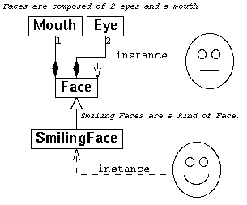
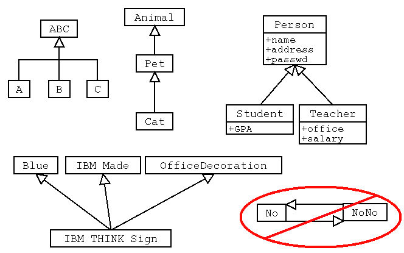

Skip chapter 22 unless you really want to read it.
It has some good practical advice on selecting tools.
It also quotes three ways to use diagrams:
**** Focus on
Generalization
on pages 410 and 411.
- Any sub is a special kind of super


- +++ Notice [---|>] the form of the arrow head.
- Notice:-
- Special classes have all the properties of the general classes.
- Special classes are more complex than the general ones.
- Special classes add attributes and operations to the general class.
- Special versions of operations override the general versions.
- *** When sub--|>super is useful.
- * Make super classes abstract (normally)
- ** Include super class name in subclass name
- ++ refactoring: create a superclass to reduce repeated code.
(note): Look at these changes to requirements to help understand the
future design decisions in the book. I will not test you on your knowledge of NextPoS or
Monopoly. You may, if you wish, ask questions on this chapter.
To get polymorphism (easily) you need a language that has pointers
and inheritance.
For example, to make a Wodget a special kind of Widget
we might write
class Wodget extends Widget { stuff } // Java
or
class Wodget : public Widget { stuff }; // C++
or
class Wodget(Widget)... // Python
or
class Wodget < Widget... // Ruby
Assume that somewhere in Widget and in Wodget there is a function
public void zark( ... ) { ... } //Java
public: void virtual zark( ... ) { ... }; //C++
Secondly you declare a variable or parameter that refers or points to
an object of type Widget
Widget myWidget; //Java objects are pointers!
Widget *myWidget; //C++
Then you attach the variable or parameter to an object of type Wodget:
myWidget = new Wodget ( ... );
(for example).
Then in an OO language like Java will make the behavior of myWidget
match that of a Wodget, not a Widget.
myWidget.zark( ... ); //Java
myWidget->zark( ... ); //C++
If you get Widget behaviors then you don't have polymorphism. In C++
this means you forgot to declare the functions as virtual or to use a pointer.
Notice that some assembler language systems in the 1970s did this --
Sketchpad for example.
Notice that we take polymorphism for granted in every day life. We don't
expect real objects to work differently when you rename them.
Notice that we can now place behaviors inside objects and when we pass these objects
around our software they take their the behavior with them. One function can tell
another object how to do something!
Example of Polymorphism -- Loaded Dice
[ LoadedDie.cpp ]
[ testLoadedDie.cpp ]
[ DiceGame2.cpp ]
[ testDiceGame2.cpp ]
[ 15x.html ]
[ Q15sample.gif ]
[ w7.html ]
(This is a big piece of work start working now)
[ 15q.html ]
[ 16.html ]
[ 15r.html ]